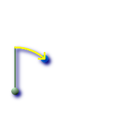
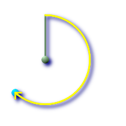

ST_Azimuth — Returns the north-based azimuth as the angle in radians measured clockwise from the vertical on pointA to pointB.
float ST_Azimuth(geometry pointA, geometry pointB);
float ST_Azimuth(geography pointA, geography pointB);
Returns the azimuth in radians of the segment defined by the given point-geometries, or NULL if the two points are coincident. The azimuth is north-based and is measured clockwise: North = 0; East = PI/2; South = PI; West = 3PI/2.
The Azimuth is mathematical concept defined as the angle, in this case measured in radian, between a reference plane and a point.
Availability: 1.1.0
Enhanced: 2.0.0 support for geography was introduced.
Azimuth is especially useful in conjunction with ST_Translate for shifting an object along its perpendicular axis. See upgis_lineshift Plpgsqlfunctions PostGIS wiki section for example of this.
Geometry Azimuth in degrees
SELECT ST_Azimuth(ST_Point(25,45), ST_Point(75,100))/(2*pi())*360 as degA_B,
ST_Azimuth(ST_Point(75,100), ST_Point(25,45))/(2*pi())*360 As degB_A;
-- NOTE easier to remember syntax using PostgreSQL built-in degrees function --
-- Both yield same answer --
SELECT degrees( ST_Azimuth(ST_Point(25,45), ST_Point(75,100)) ) as degA_B,
degrees( ST_Azimuth(ST_Point(75,100), ST_Point(25,45)) ) As degB_A;
dega_b | degb_a
------------------+------------------
42.2736890060937 | 222.273689006094
 Green: the start Point(25,45) with its vertical. Yellow: degA_B as the path to travel (azimuth).
|  Green: the start Point(75,100) with its vertical. Yellow: degB_A as the path to travel (azimuth).
|